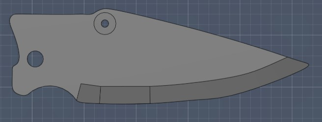
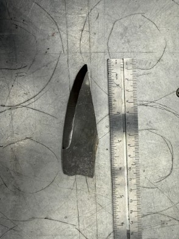

CAD / MATERIALS / FABRICATION
Folding Knife Project
Complete design and fabrication of a folding mechanical assembly, integrating CAD, materials selection, machining, heat treatment, and final assembly.
Overview
This project involved the complete design and fabrication of a folding mechanical assembly, progressing from initial concept development and materials research through CAD modeling, manufacturing, heat treatment, and final assembly.
The project began with several preliminary design concepts before a drop-point folding configuration and 1084 carbon steel were selected. The design was modeled in Fusion 360 and then physically fabricated through rough cutting, filing, beveling, sanding, heat treatment, finishing, and assembly.
Completing the project provided hands-on experience connecting mechanical design, materials science, manufacturing processes, and assembly considerations within a finished product.
Design Development
The design process began with three preliminary concepts intended for different applications. The concepts were compared based on geometry, intended use, material requirements, and manufacturing considerations.
The final concept used a drop-point profile incorporated into a compact folding design. A liner-lock mechanism was selected for the folding assembly, allowing the primary component to be contained within the handle when closed.
The selected geometry was modeled in Fusion 360 before physical fabrication. CAD provided a reference for the component geometry, pivot locations, proportions, and overall assembly.

Material Selection
Material selection was an important part of the project. The team researched several metals, polymers, and ceramics while comparing properties such as hardness, durability, corrosion resistance, manufacturability, and cost.
1084 carbon steel was selected as the primary material. The material provided a practical combination of mechanical performance and manufacturability for the fabrication processes available during the project.
Bevel Design
Several bevel geometries were researched before fabrication, including full hollow, full flat, sabre, chisel, convex, and Scandi grinds. Each geometry presented different tradeoffs involving material retention, durability, geometry, and manufacturing complexity.
A sabre grind was ultimately selected for the fabricated design. This geometry retained additional material through the upper portion of the component while providing the required beveled profile.
A center reference line was marked before material removal to help maintain symmetry between both sides during fabrication.
Fabrication
Physical fabrication began by transferring the design to 1084 carbon steel and rough-cutting the profile. The rough geometry was then refined through filing, sanding, and additional material removal.
A custom sanding jig was constructed to improve control and consistency during bevel fabrication. The jig helped maintain the desired geometry while the sabre grind was progressively formed and refined.
Heat generated during material removal was also considered throughout fabrication. Controlling excessive heat was important to avoid unintentionally affecting the material while the geometry was being shaped.

Heat Treatment
After the primary geometry and bevel were completed, the 1084 carbon steel underwent heat treatment. The process included quenching followed by tempering as part of the final material-processing stage.
This portion of the project connected the materials-science concepts studied during the design phase with the physical manufacturing process. Rather than treating material properties as only design values, the project demonstrated how processing can influence the behavior of the finished component.
Engineering Considerations
One of the most important aspects of the project was seeing how individual engineering decisions interact. Material selection, component geometry, manufacturing methods, heat treatment, and assembly could not be considered independently.
Geometry affected manufacturability and material retention, while the selected steel influenced both fabrication and heat-treatment considerations. During manufacturing, symmetry, dimensional control, surface finish, and heat generation also had to be considered.
Final assembly further demonstrated the importance of tolerances. Small dimensional differences introduced during fabrication directly affected how the individual components aligned and interacted.